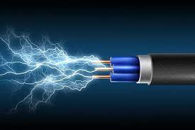

Prąd elektryczny - ukierunkowany ruch (przepływ) swobodnych ładunków elektrycznych w środowisku przewodzącym, który zachodzi pod wpływem pola elektrycznego.

Prąd elektryczny w metalach i półprzewodnikach jest związany z przepływem elektronów i dziur (ciało stałe, pasmowa teoria ciała stałego), w elektrolitach — z przepływem jonów, w gazach — jonów i elektronów (wyładowanie elektryczne). Za kierunek prądu elektrycznego przyjmuje się umownie kierunek przepływu ładunków dodatnich. Wielkościami charakteryzującymi prąd elektryczny są jego natężenie (natężenie prądu elektrycznego) i gęstość = ρ++ + ρ−− (ρ+, + i ρ−, − — gęstości i prędkości dodatniego i ujemnego ładunku elektrycznego). Prąd elektryczny jest wywołany polem elektrycznym (różnicą potencjałów); związek między natężeniem prądu elektrycznego i napięciem opisuje prawo Ohma.
Rozróżnia się prąd elektryczny stały (natężenie prądu elektrycznego nie zmienia się w czasie) i prąd elektryczny zmienny, którego szczególnym przypadkiem jest prąd elektryczny przemienny. Przykładem prądu elektrycznego przemiennego jest prąd elektryczny sinusoidalny, wywołany napięciem sinusoidalnie zmiennym, opisanym równaniem U = Umcosω t; zmiany natężenia prądu elektrycznego są wówczas opisane równaniem I = Imcos(ω t + φ), gdzie Um i Im — amplitudy napięcia i natężenia prądu elektrycznego (zwane także napięciem szczytowym i natężeniem szczytowym), ω = 2πf — częstotliwość kątowa (pulsacja), f — częstotliwość, φ — przesunięcie fazowe. Napięcie skuteczne Usk i natężenie skuteczne Isk są równe napięciu lub natężeniu prądu stałego, którego przepływ prowadzi do wydzielenia się w tym samym czasie tej samej ilości ciepła co w przypadku rozważanego prądu zmiennego; dla prądu sinusoidalnego: Usk = Um /, Isk = Im /. Do najważniejszych zjawisk towarzyszących występowaniu prądu elektrycznego należy powstawanie pola magnetycznego oraz zjawiska: wydzielania ciepła (Joule’a prawo; z wyjątkiem nadprzewodników w temperaturze poniżej temperatury krytycznej), zjawiska galwanomagnetyczne, chemiczne (elektroliza). Źródłami prądu elektrycznego są ogniwa galwaniczne, fotoelektryczne lub termoelektryczne oraz prądnice elektryczne. W energetyce stosuje się prąd elektryczny trójfazowy, przesyłany za pomocą linii trójfazowej, w której płynące prądy są przesunięte względem siebie w fazie o ⅓ okresu (φ = 0°, 120°, 240°). Częstotliwość prądu elektrycznego w sieci elektroenergetycznej Polski i większości krajów wynosi 50 Hz, napięcie skuteczne 230 V (w USA — odpowiednio 60 Hz i 110 V).